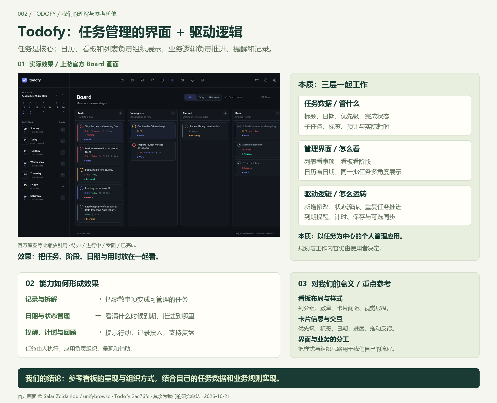
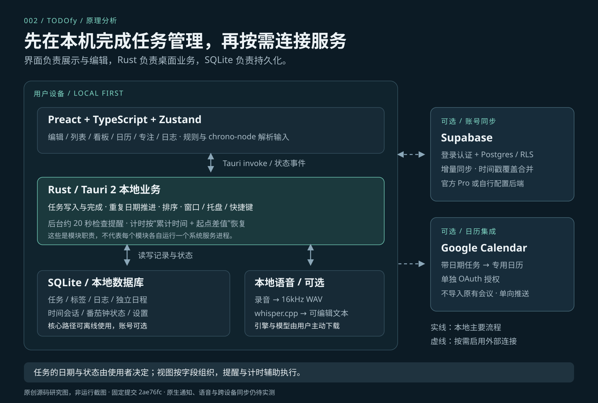

把事情变成任务
标题、备注、标签、优先级和子任务，把零散事项整理成可查找的记录。
我们的理解 / 官方原图与源码研究
用列表、看板和日历展示同一批任务，以新增编辑、状态流转、重复任务、提醒、计时和本地存储支撑管理。对我们最直接的意义：参考看板样式、卡片信息层级和交互组织。
固定研究版本 2ae76fc · 下方引导图为我们生成的总结图
产品画面引用上游官方截图；中文解释与分析由本研究整理。

01 / 源库真实展示
以下图片原样引用自上游固定提交的 docs/。
可以切换界面、放大查看，并追溯原文件。
这是上游 README 使用的静态界面截图。切换和放大用于查看原图；图片里的按钮、计时数字和任务状态来自作者的拍摄画面。实际操作请使用 官方桌面应用 ↗。
标题、备注、标签、优先级和子任务，把零散事项整理成可查找的记录。
日历呈现任务与日程，看板呈现工作阶段，两个维度共同描述任务。
专注计时、预计与实际耗时、日志与心情，帮助执行和复盘。
02 / 我们的源码分析
以下是对固定版本源码的分析。
每个步骤都提供对应的上游文件。
| 上游字段 | 职责 |
|---|---|
id | 标识同一条任务 |
due_date / remind_at | 到期日期与提醒时间 |
status / stage | 完成状态与看板阶段 |
order_index / board_index | 列表与看板各自的排序 |
estimate_minutes | 预计投入时间 |

03 / 使用场景
根据已确认的能力，整理使用路径。
每个场景都可以跳转到对应的官方界面。
04 / 我们的理解、总结与参考意义
我们可以把它理解成“任务展示板＋管理驱动”：本质是以任务为中心的个人管理应用。
日历、看板和列表组织展示任务，新增修改、状态流转、提醒计时、保存同步等逻辑让它运转。规划内容和执行决定由使用者完成。
标题、日期、优先级、完成状态、子任务、标签和耗时，是应用管理的对象。
列表看事项，看板看推进阶段，日历看日期；多个视图描述同一批任务。
任务编辑与流转、重复推进、到期提醒、计时、本地保存和可选同步。
回看首屏总结图 ↑ · 打开 PNG 原图 ↗ · 查看 SVG ↗
对我们的意义
当我们设计自己的任务或项目页面时，可以重点研究这些做法，再结合自己的数据与业务规则实现。
| 参考重点 | 我们可以怎样用 |
|---|---|
| 看板布局与样式 | 按状态分列，在列标题显示数量；用间距、底色和边框区分列、卡片与重点信息。 |
| 卡片信息层级 | 突出标题，安排好优先级、标签、日期、子任务进度与耗时的位置，兼顾信息量和可读性。 |
| 交互与状态组织 | 移动卡片对应阶段变化；日期和完成状态单独处理，让界面显示与任务数据保持一致。 |
| 界面与驱动分工 | 界面负责展示和操作，业务逻辑负责流转规则、提醒、计时与存储；按实际需求选择多视图。 |
实际效果是让计划、进度和投入更容易看清；具体任务和规划决定仍由使用者完成。
来源与核查范围
八张 PNG 与上游固定提交逐字节一致，保留英文界面、原始日期和作者示例。
图片版权归 Salar Zeidanlou / unifybrowse；中文注解和原理图为本研究整理。
研究提交 2ae76fc · 核查日期 2026-10-21 · 原生运行与外部服务尚未实测。